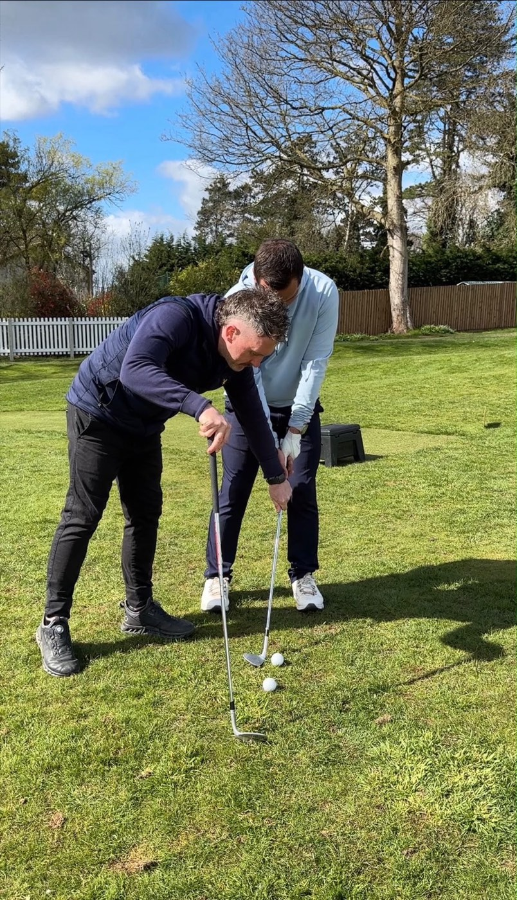

$49
Personal Golf Review
- Personalised review of your game
- Expert video analysis
- Clear priorities for improvement
Personalised PGA Golf Coaching, Wherever You Play
Stop guessing what to practice. Get personalised coaching, expert video analysis and a clear improvement plan from PGA Professional Andy Plester, wherever you play.
Complete golf coaching online worldwide and in person at Ullesthorpe Court Hotel & Golf Club in Leicestershire.

Trusted on Skillest
Manually verified · 3 November 2026
Your First Step
Send me a short video of your golf swing or short game and I’ll help you identify the first thing to improve. No guesswork. Just a clearer way forward.
Share your swing or short game securely through Skillest.
I’ll show you the first area I would work on in your game.
Receive personalised feedback and a clearer way forward.
Verified Skillest Reviews
Genuine five-star feedback shared by Andy’s golfers on Skillest.
★★★★★“This was a real game changer lesson for me. Andy noticed an issue early with my swing and got me working on a drill.”
Janet Hartley Bing · Review on Skillest
★★★★★“Andy has a great way of getting the message and adjustments across, often seen within a few shots. Excellent!”
Joe Riddle · Review on Skillest
★★★★★“First lesson was great. Andy gave me some really good advice to put into practice!”
Leon Gamble · Review on Skillest
Join golfers who are improving their game with personalised coaching from PGA Professional Andy Plester. Start with a FREE Golf Assessment and discover your next step.
Get Your FREE Golf Assessment
About Andy
PGA Professional | Master Club Fitter | TaylorMade Ambassador
With 23 years of PGA coaching experience, Andy brings a wealth of knowledge to golfers of all abilities, combining expert swing analysis, personalised coaching and a clear approach to improving performance.
From full swing to short game, his coaching is built around understanding your individual needs, helping you develop confidence, consistency and lasting improvement.
As a Master Club Fitter with over 20 years of experience, Andy also understands how the right equipment can complement your technique and help you get the most from your game.
Meet Andy
Short-Game Specialist
Andy’s book is a practical guide to smarter short-game decisions and better performance. It reflects a specialist strength within his wider approach to complete golf coaching.
In-Person Lessons
Work one-to-one with Andy at Ullesthorpe Court Hotel & Golf Club. Lessons are shaped around your game, from full swing and ball striking to short game, putting and on-course performance.
Skillest is the booking route for current lesson options and availability. Email Andy if you need help choosing.
Your First Step
Start with your free golf assessment, receive personalised feedback and discover the right coaching route for your game.